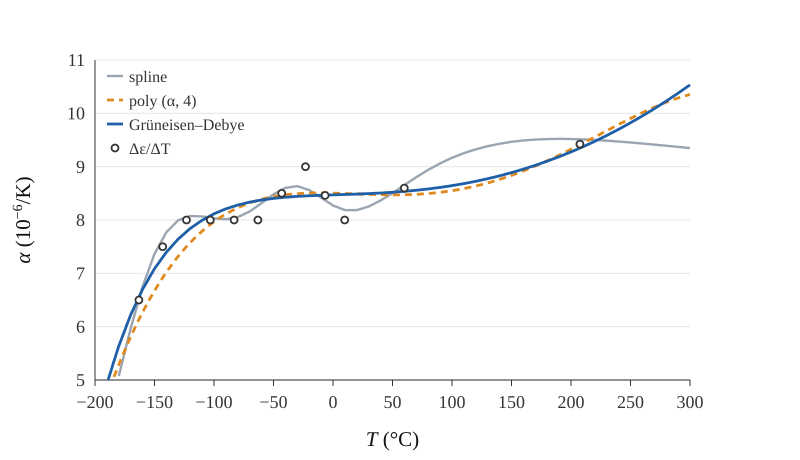
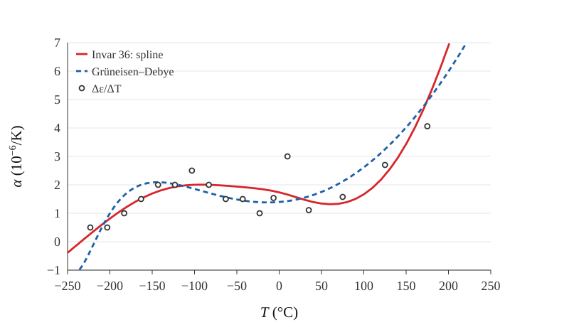

Genleşme eğrisini fizikle düzgünleştirmek
Titanyum tablosunda bir çukur
Yuva malzemelerinin α(T) tablolarını kurduğum yazıda, tabloların uzama verisinden düzgün bir eğri uydurularak çıkarıldığını anlatmıştım. Ti-6Al-4V'nin α(T) penceresine bakınca bir tuhaflık gördüm: α −20 °C'de 8.56, 20 °C'de 8.19, 60 °C'de yeniden 8.65. Yani oda sıcaklığı civarında α azalıp sonra artıyor. Bu titanyumda beklenen bir davranış değil; α-β titanyum alaşımlarında bu aralıkta faz dönüşümü ya da manyetik etki yok.
Çukurun kaynağı veri birleştirmesi. 20 °C altında ASM'nin düşük sıcaklık tablosu, üstünde başka bir kaynak var ve tablo değerleri yuvarlanmış. Eğri, her kaynağın belirsizliği içinde kalan en düzgün eğri olarak seçiliyordu; ama "düzgün" yalnızca matematiksel bir koşuldu. Eğrinin fiziksel olarak anlamlı olması için hiçbir şart yoktu ve iki kaynağın birleştiği yerde eğri hafifçe büküldü. Uzamada bu bükülme yuvarlama payının içinde kalıyor, ama α uzamanın eğimi olduğu için eğimde görünür bir çukura dönüşüyor.

İlk fikir: α azalamaz
Metallerin çoğunda α sıcaklıkla artar. Bu yüzden ilk olarak eğriye "α azalamaz" kısıtı ekledim. Bu her malzemede geçerli değil: Invar'da α oda sıcaklığı civarında azalıyor, bazı malzemeler çok soğukta ya da yüksek sıcaklıkta faz dönüşümü yüzünden kuralı bozuyor. Bu yüzden kısıtı yalnız bir sıcaklık penceresinde ve malzeme bazında uyguladım; Invar tamamen dışarıda.
Kısıt bir şeyi düzeltmeden önce sınanıyor: kısıtlı eğri veriden belirgin biçimde uzaklaşıyorsa (χ² artışı 4'ten büyükse) kısıt o bölgede uygulanmıyor, çünkü o zaman verideki azalma gerçek olabilir. Titanyumda tam olarak bu oldu: kısıt χ²'yi 13 artırdı ve reddedildi. Yani yalnız matematiksel düzgünlükle uydurulan eğri, veriyle çukur arasında ayrım yapamıyordu.
Grüneisen–Debye modeli
Çözüm, eğriye bir şekil dayatmak yerine fiziksel bir model uydurmak oldu. Grüneisen bağıntısına göre katılarda ısıl genleşme ısı kapasitesiyle orantılıdır; ısı kapasitesinin sıcaklıkla değişimini de Debye modeli verir. Buna göre:
- α(T) = A·D(T/θ) + B·T + C·T². D, Debye ısı kapasitesi fonksiyonu; θ, Debye sıcaklığı; B·T terimi metallerde elektron katkısı, C·T² terimi yüksek sıcaklıktaki anharmonik katkı için.
- Model doğrudan uzamaya uyduruluyor (α'nın integrali), çünkü kaynaklar uzama veriyor. A, B, C doğrusal en küçük karelerle, θ tarama ile bulunuyor. θ burada yalnız bir uydurma parametresi; malzemenin gerçek Debye sıcaklığı olarak okunmamalı.
- Model bir malzemeye ancak veriyi karşılıyorsa uygulanıyor: her noktada yuvarlama payına ek olarak %2 ölçüm belirsizliği varsayıldığında χ²/N en fazla 3 olmalı ve α pencere içinde azalmamalı. %2 benim seçimim; CINDAS'ın önerilen değerler için verdiği ±%5 belirsizliğin altında kalacak biçimde seçtim.
- Model reddedilirse (SS 410 ve berilyum bakırda oldu) eski düzgünleştirme "α azalamaz" kısıtıyla birlikte kullanılıyor. Invar'a model hiç uygulanmıyor.
Titanyumda sonuç: α −100 °C'de 8.12, 20 °C'de 8.49, 100 °C'de 8.64, 250 °C'de 9.82. Çukur yok ve eğri veri noktalarının arasından geçiyor. Model ile yalnız veriye bağlı düzgünleştirme arasındaki fark −100…150 °C aralığında, modelin uygulandığı bütün malzemelerde uzamanın yaklaşık %1.5'ini geçmiyor.
Bağ kalınlığına etkisi
Varsayılan örnekte (Ti-6Al-4V yuva, −40 / +70 °C) yuvanın uçlardaki sekant α'ları 8.43 / 8.41'den 8.46 / 8.51'e çıkıyor ve önerilen bağ kalınlığı 0.050 mm'den 0.052 mm'ye çıkıyor (yaklaşık %4). Alüminyum ve paslanmaz yuvalarda değişim %1–1.5 civarında. Fark küçük ama yönü önemli: eski eğride soğuk uçtaki sekant α sıcak uçtakinden büyüktü, yani titanyum ısındıkça daha az genleşiyormuş gibi hesaplanıyordu.
Invar'a uygulasaydık ne olurdu?
Invar'ın düşük genleşmesi manyetik bir etkiden gelir: Curie noktasının altında manyetik düzenin yarattığı hacim artışı, ısıl genleşmeyi büyük ölçüde dengeler. Grüneisen–Debye modeli yalnız örgü titreşimlerini ve elektronları anlatır; bu etkiyi içermez. Modeli Invar'a zorla uydurunca χ²/N 4.91 çıkıyor, yani kabul sınırının dışında. Eğri α'nın −100 °C civarındaki tepesini ve 60 °C civarındaki çukurunu yumuşatıyor.

Fark ortalamada küçük görünse de Invar'ın kullanıldığı yerde büyük. 65 °C kürden 85 °C'ye sekant α veride 1.34, zorlanmış modelde 2.12; yaklaşık %60 fazla. Invar zaten α'sı çok küçük olduğu için seçilir; bu kadar bir hata, cam ile yuva arasındaki α farkını ve dolayısıyla bağ kalınlığını doğrudan bozar. Bu yüzden Invar'da veri olduğu gibi kullanılıyor.
Polinom yetmez mi?
NIST'in kriyojenik veritabanı uzamayı polinom biçimindeki denklemlerle veriyor. Ben de α için 3. ve 4. dereceden polinomları aynı veriye, aynı belirsizlikle uydurdum. Sonuç:
- Titanyumda çukur kaybolmuyor, sadece biçim değiştiriyor: 4. derece polinomda α 20 °C ile 60 °C arasında hafifçe azalıyor (8.49'dan 8.47'ye).
- Verinin seyrek olduğu uçlarda polinom modelden ayrılıyor; örneğin −150 °C civarında modelin belirgin biçimde altında kalıyor. Polinomun fiziksel bir sınırı yok; Debye fonksiyonu ise 0 K'de sıfıra gider ve yüksek sıcaklıkta sabitlenir.
- NIST'in kendisi de 2000 tarihli veritabanı makalesinde, uzama için verilen denklemlerin türevi alınarak α'nın iyi elde edilemeyeceğini belirtiyor.
Ayrı bir hesaplama aracı geliyor
Bu düzgünleştirmeyi Athermal Bağ Hesabı'nın içinde gömülü bırakmak istemiyorum. İleride ayrı bir hesaplama aracı olarak yayımlayacağım: kendi uzama ya da α verinizi .xlsx veya .csv olarak yüklüyorsunuz, araç Grüneisen–Debye modelini ve kısıtlı düzgünleştirmeyi uyguluyor, modelin veriyi karşılayıp karşılamadığını χ² ile gösteriyor ve sonucu Athermal Bağ Hesabı'na doğrudan alınabilecek bir α(T) tablosu olarak veriyor. Hangi sıcaklık penceresinde hangi kısıtın uygulanacağı ve modelin kullanılıp kullanılmayacağı sizde kalacak; Invar gibi kuralı bozan malzemeler için bu seçim gerekli.
Kaynaklar
- T. H. K. Barron, G. K. White, Heat Capacity and Thermal Expansion at Low Temperatures, Kluwer/Plenum, 1999 (Grüneisen bağıntısı ve Debye modeli).
- E. D. Marquardt, J. P. Le, R. Radebaugh, Cryogenic Material Properties Database, 11th International Cryocooler Conference, 2000.
- NIST Cryogenic Material Properties (Ti-6Al-4V, Invar, 304, 6061-T6).
- ASM, Materials at Low Temperatures, 1983 (uzama tabloları).
- E. T. Whittaker, On a New Method of Graduation, Proc. Edinburgh Math. Soc. 41, 1923 (cezalı düzgünleştirme).